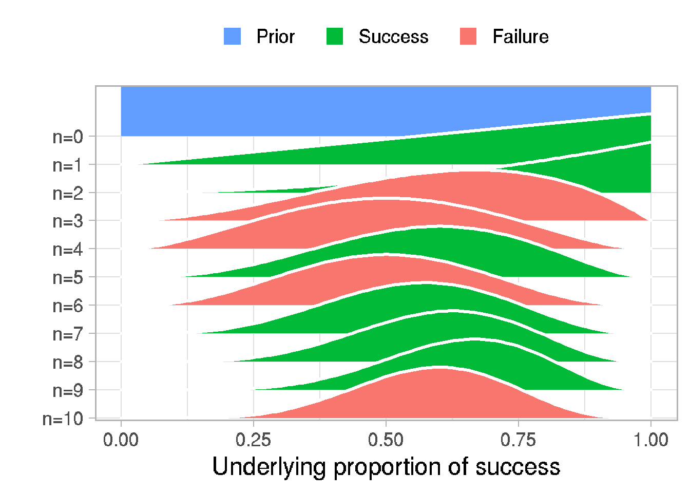
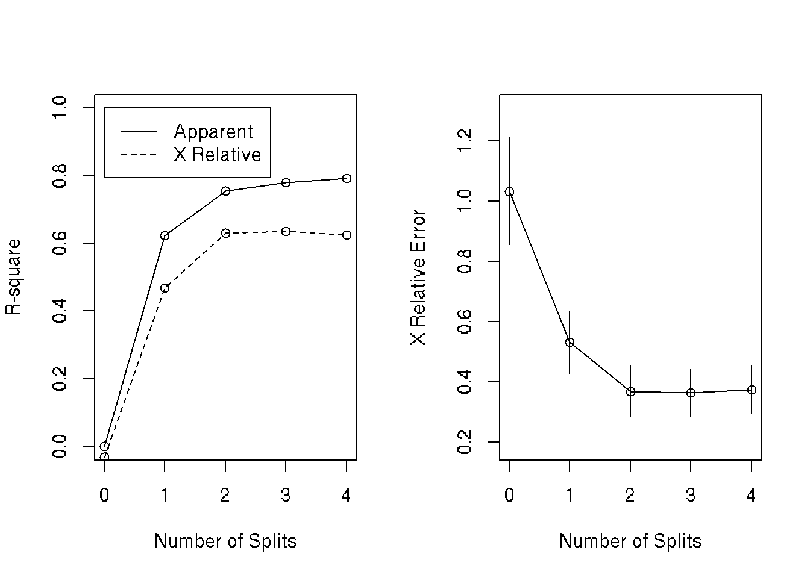
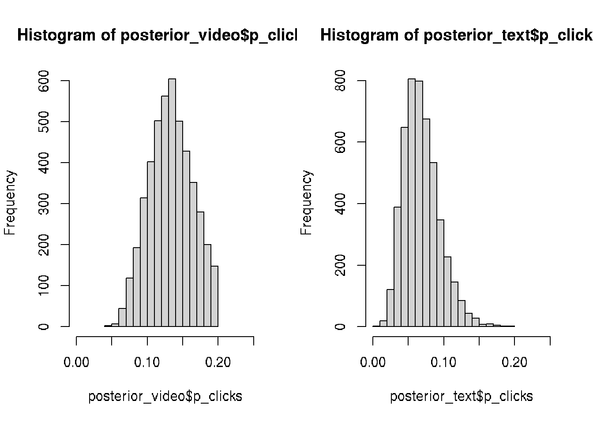
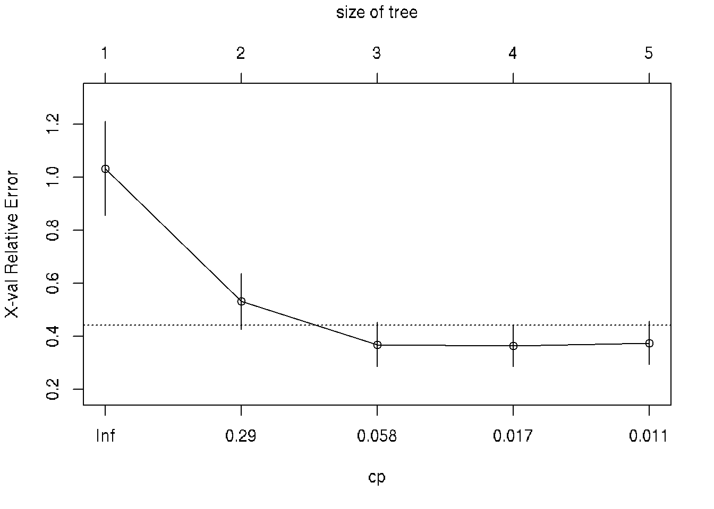
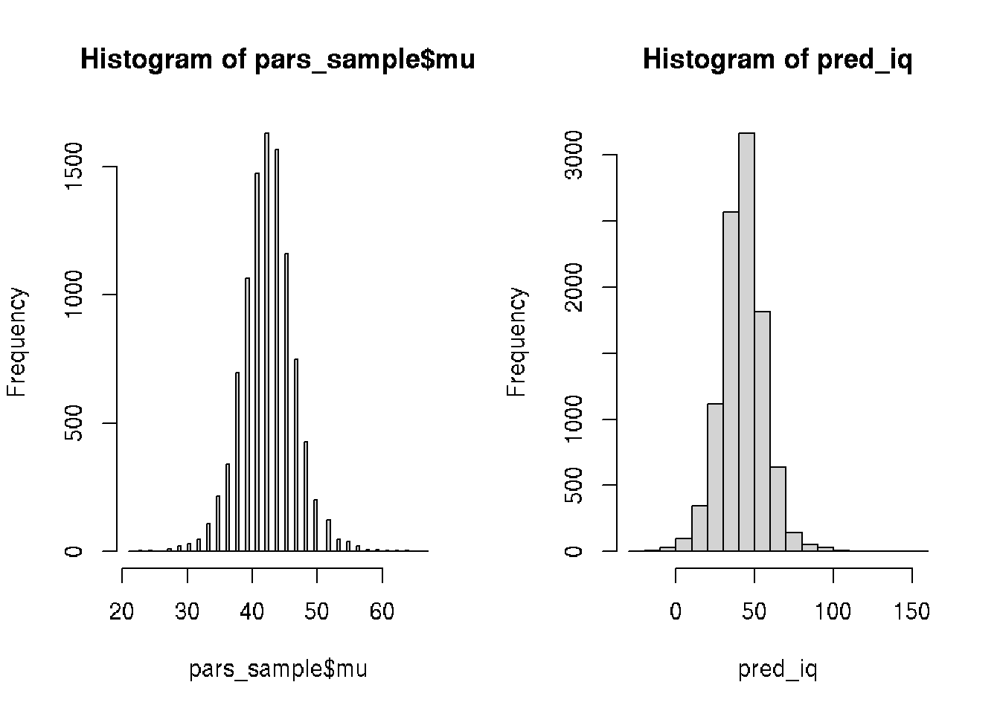
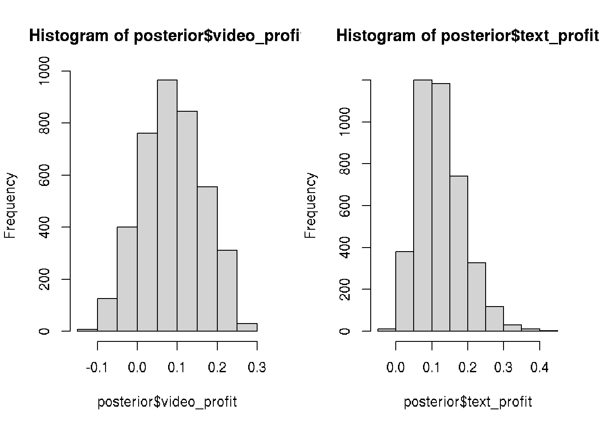
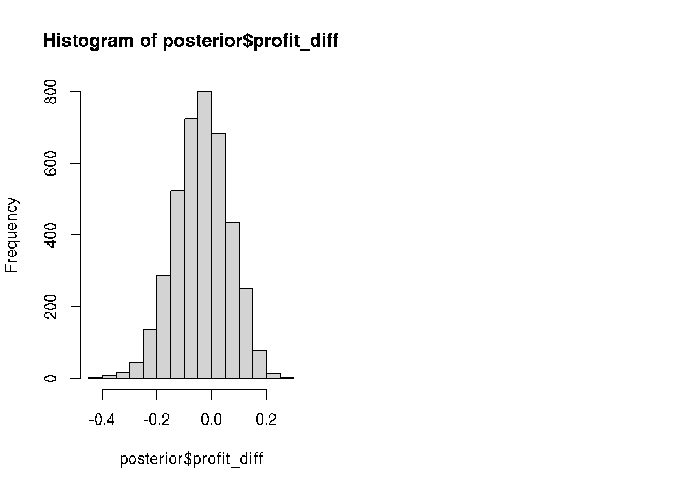

Chapter 31 Bayesian Statistics
Bayesian data analysis the use of Bayesian inference to learn from data.
Bayesian inference is a method for figuring out unobservable quantities given known facts that uses probability to describe the uncertainty over what the values of the unknown quantities could be.
Bayesian inference is conditioning on data, in order to learn about parameter values.
- A prior is a probability distribution that represents what the model knows before seeing the data.
- A posterior is a probability distribution that represents what the model knows after having seen the data.
# Visualization function of Bayesian inference for binary data
library(ggjoy)
library(ggExtra)
library(ggjoy)
library(tidyverse)
# prop_model function to visualize bayesian posterior distributions
prop_model <- function(data = c(), prior_prop = c(1, 1), n_draws = 10000,
show_plot = TRUE)
{
data <- as.logical(data)
proportion_success <- c(0, seq(0, 1, length.out = 100), 1)
data_indices <- round(seq(0, length(data), length.out = min(length(data) +
1, 20)))
post_curves <- map_dfr(data_indices, function(i) {
value <- ifelse(i == 0, "Prior", ifelse(data[i], "Success",
"Failure"))
label <- paste0("n=", i)
probability <- dbeta(proportion_success, prior_prop[1] +
sum(data[seq_len(i)]), prior_prop[2] + sum(!data[seq_len(i)]))
probability <- probability/max(probability)
tibble(value, label, proportion_success, probability)
})
post_curves$label <- fct_rev(factor(post_curves$label, levels = paste0("n=",
data_indices)))
post_curves$value <- factor(post_curves$value, levels = c("Prior",
"Success", "Failure"))
p <- ggplot(post_curves, aes(x = proportion_success, y = label,
height = probability, fill = value)) + geom_joy(stat = "identity",
color = "white", alpha = 1, panel_scaling = TRUE, size = 1) +
scale_y_discrete("", expand = c(0.01, 0)) + scale_x_continuous("Underlying proportion of success") +
scale_fill_manual(values = hcl(120 * 2:0 + 15, 100, 65),
name = "", drop = FALSE, labels = c("Prior ", "Success ",
"Failure ")) + theme_light(base_size = 18) +
theme(legend.position = "top")
if (show_plot) {
print(p)
}
invisible(rbeta(n_draws, prior_prop[1] + sum(data), prior_prop[2] +
sum(!data)))
}31.1 Simple model with one binary parameter
# Generate 50 random binary data with P(1)=0.75
data <- sample(c(1, 0), prob = c(0.75, 0.25),
size = 10, replace = TRUE)
# Extract and explore the posterior
posterior <- prop_model(data)
head(posterior)## [1] 0.6907880 0.6526425 0.4462395 0.6992505 0.5693596 0.5330336# Plot the histogram of the posterior
hist(posterior, xlim = c(0, 1), breaks=30)
# Calculate the median
median(posterior)## [1] 0.5882531# Calculate the credible interval (CI)
quantile(posterior, c(0.05, 0.95))## 5% 95%
## 0.3505923 0.7977435# Probability of successes in our distribution > 0.07
sum(posterior > 0.07) / length(posterior)## [1] 1Generate binomial data
# Parameters
p_success <- 0.42 # probability of success
n <- 100 # number of observations
# logical vector with false if Uniform distribution
# generates value less then probability of success
data <- c()
for (i in 1:n) {
data[i] <- runif(1, min = 0, max = 1) < p_success
}
# convert logical to numeric 0/1
data <- as.numeric(data)
data## [1] 0 0 1 0 1 1 0 0 0 0 1 1 0 0 0 0 1 1 0 1 1 1 0 1 1 1 1 0 1 0 0 1 0 0 0 0 0 1 1 1 1 0 0 0 0 1 1 1 0 1 0 1 0 1 0 1 0 1 0 0 1 1 0 1 1 0 1 1 0 1 0 0 0 1 1 1 0 0 0 0 0 0 1 1
## [85] 0 1 0 1 1 0 0 0 1 1 0 0 1 0 0 0# the same vector using rbinom distribution
n = 100
size = 1
prob = 0.42
rbinom(n, size, prob)## [1] 1 0 1 0 1 0 1 0 0 1 1 0 1 0 0 0 1 1 0 1 0 0 1 0 0 1 0 0 0 1 1 1 0 0 0 1 0 1 0 1 1 0 1 1 1 0 1 1 1 0 1 0 1 0 1 1 0 0 0 0 0 1 0 0 0 1 0 0 1 0 1 1 0 0 0 1 1 1 1 1 0 0 1 1
## [85] 0 1 0 0 0 0 0 0 1 1 0 0 0 0 0 131.2 Website visitors model
To get more visitors to your website you are considering paying for an ad to be shown 100 times on a popular social media site. According to the social media site, their ads get clicked on 10% of the time. How many visitors could your site get?
We can fix % of clicks as 0.1 but we do not know exactly how many clicks people do (uncertain). We suggest the % of cliks is uniformly distributed between 0 and 20.
# Parameters
n <- 100000 # number of simulations
n_ads_shown <- 100 # number of shown adds
# probability that add will be clicked
p_clicks <- runif(n, min = 0.0, max = 0.2)
# MODEL: We assume that the binomial distribution is a reasonable generative model
n_visitors <- rbinom(n = n,
size = n_ads_shown,
prob = p_clicks)
#---> Visualize the prior model simulation
library(ggplot2)
df <- data.frame(x = n_visitors, y = p_clicks)
p <- ggplot(df, aes(n_visitors, p_clicks)) + geom_point() + theme_classic()
ggExtra::ggMarginal(p, type = "histogram", bins = 18)
#<---Updated Bayesian model
New data: 13 people clicked and visited site when the ad was shown 100 times.
# Prior distribution
prior <- data.frame(p_clicks, n_visitors)
# The posterior subset
posterior <- prior[prior$n_visitors == 13, ]
head(posterior)## p_clicks n_visitors
## 6 0.1650342 13
## 11 0.1480911 13
## 20 0.1011115 13
## 23 0.1511866 13
## 40 0.1314564 13
## 51 0.1263088 13# posterior distribution for 13 visitors
hist(posterior$p_clicks)
# update
# Assign posterior to a new variable called prior
prior <- posterior
head(prior)## p_clicks n_visitors
## 6 0.1650342 13
## 11 0.1480911 13
## 20 0.1011115 13
## 23 0.1511866 13
## 40 0.1314564 13
## 51 0.1263088 13#---> plot of subset distribution taken from data
df <- prior
p <- ggplot(df, aes(n_visitors, p_clicks)) + geom_point() + theme_classic()
ggExtra::ggMarginal(p, type = "histogram", bins = 18)
#<---
# Replace prior$n_visitors with a new sample and visualize the result
n <- nrow(prior)
n_ads_shown <- 100
prior$n_visitors <- rbinom(n, size = n_ads_shown, prob = prior$p_clicks)
hist(prior$n_visitors)
#---> plot of distributions
df <- prior
p <- ggplot(df, aes(n_visitors, p_clicks)) + geom_point() + theme_classic()
ggExtra::ggMarginal(p, type = "histogram", bins = 18)
#<---Use result of the model for prediction:
Calculate the probability that you will get 5 or more visitors.
sum(prior$n_visitors >= 5) / length(prior$n_visitors)## [1] 0.9863665Now we update prior and will use beta distribution.
n <- 100000
n_ads_shown <- 100
# Change the prior on proportion_clicks
p_clicks <- rbeta(n, shape1 = 5, shape2 = 95)
hist(p_clicks)
n_visitors <- rbinom(n = n,
size = n_ads_shown,
prob = p_clicks)
prior <- data.frame(p_clicks, n_visitors)
posterior <- prior[prior$n_visitors == 13, ]
# Plots the prior and the posterior
par(mfcol = c(1, 2))
hist(prior$p_clicks, xlim = c(0, 0.25))
hist(posterior$p_clicks, xlim = c(0, 0.25))
Let’s fit the binomial model to both the video ad data (13 out of 100 clicked) and the new text ad data (6 out of a 100 clicked).
n <- 100000
n_ads_shown <- 100
p_clicks <- runif(n, min = 0.0, max = 0.2)
n_visitors <- rbinom(n = n, size = n_ads_shown,
prob = p_clicks)
prior <- data.frame(p_clicks, n_visitors)
# Create the posteriors for video and text ads
posterior_video <- prior[prior$n_visitors == 13, ]
posterior_text <- prior[prior$n_visitors == 6, ]
par(mfrow=c(1,2))
# Visualize the posteriors
hist(posterior_video$p_clicks, xlim = c(0, 0.25))
hist(posterior_text$p_clicks, xlim = c(0, 0.25))
# combine data into dataframe
posterior <- data.frame(video_prop = posterior_video$p_clicks[1:4000],
text_prop = posterior_text$p_click[1:4000])
# Calculate the posterior difference: video_prop - text_prop
posterior$prop_diff <- posterior$video_prop - posterior$text_prop
# Calculate the median of prop_diff
median(posterior$prop_diff)## [1] 0.06563094# Calculate the proportion
mean(posterior$prop_diff > 0.0)## [1] 0.94825# Visualize prop_diff
hist(posterior$prop_diff)
Decision analysis
As we see the video ads are clicked more often.
Each visitor spends $2.53 on average, a video ad costs $0.25 and a text ad
costs $0.05. Let’s figure out the probable profit when using video ads and text ads.
visitor_spend <- 2.53
video_cost <- 0.25
text_cost <- 0.05
# Add the column posterior$video_profit
posterior$video_profit <- posterior$video_prop * visitor_spend - video_cost
# Add the column posterior$text_profit
posterior$text_profit <- posterior$text_prop * visitor_spend - text_cost
head(posterior)## video_prop text_prop prop_diff video_profit text_profit
## 1 0.1991635 0.03699197 0.16217154 0.25388368 0.04358969
## 2 0.1931784 0.09495372 0.09822467 0.23874133 0.19023292
## 3 0.1316657 0.05753025 0.07413544 0.08311420 0.09555153
## 4 0.1654641 0.06146723 0.10399688 0.16862420 0.10551210
## 5 0.1260397 0.07971197 0.04632772 0.06888041 0.15167129
## 6 0.1152924 0.05278979 0.06250263 0.04168981 0.08355816# Visualize the video_profit and text_profit columns
par(mfrow=c(1,2))
hist(posterior$video_profit)
hist(posterior$text_profit)
# Difference between video and text ad profits
# Add the column posterior$profit_diff
posterior$profit_diff <- posterior$video_profit - posterior$text_profit
# Visualize posterior$profit_diff
hist(posterior$profit_diff)
# Calculate a "best guess" for the difference in profits
median(posterior$profit_diff)## [1] -0.03395372# Calculate the probability that text ads are better than video ads
mean(posterior$profit_diff < 0)## [1] 0.63125
When you put up a banner on your friend’s site you got 19 clicks in a day, how many daily clicks should you expect this banner to generate on average? Now, modify your model, one piece at a time, to calculate this.
Start by replacing the prior distribution over proportion_clicks by a prior over mean_clicks. Make the prior a uniform (runif) distribution from 0 to 80 clicks per day.
n <- 100000
n_ads_shown <- 100
mean_clicks <- runif(n, min = 0, max = 80)
n_visitors <- rbinom(n, size = n_ads_shown,
prob = p_clicks)
prior <- data.frame(p_clicks, n_visitors)
posterior <- prior[prior$n_visitors == 13, ]Clicks per day instead of clicks per ad
When you put up a banner on your friend’s site you got 19 clicks in a day, how many daily clicks should you expect this banner to generate on average? Now, modify your model, one piece at a time, to calculate this.
# Change this model so that it uses a Poisson distribution
n <- 100000
mean_clicks <- runif(n, min = 0, max = 80)
n_visitors <- rpois(n = n, mean_clicks)
prior <- data.frame(mean_clicks, n_visitors)
posterior <- prior[prior$n_visitors == 13, ]
hist(prior$mean_clicks)hist(posterior$mean_clicks)
Simulates the number of clicks/visitors (n_clicks) from 100 shown ads using the rbinom function
given that the underlying proportion of clicks is 10%.
Calculates the probability of getting 13 visitors (prob_13_visitors).
That is, in probability notation it’s calculating P(n_visitors = 13 | proportion_clicks = 10%).
# Rewrite this code so that it uses dbinom instead of rbinom
n_ads_shown <- 100
p_clicks <- 0.1
n_visitors <- 13
prob_13_visitors <- dbinom(n_visitors,
size = n_ads_shown,
prob = p_clicks)
prob_13_visitors## [1] 0.07430209Currently the code calculates P(n_visitors = 13 | proportion_clicks = 10%): The probability of getting 13 visitors given that the proportion of clicks is 10%.
Change the code to instead calculate P(n_visitors | proportion_clicks = 10%): The probability distribution over all possible numbers of visitors. Tip: As dbinom is vectorized it suffices to change the value of n_visitors into a vector with the numbers 0, 1, 2, …, 100.
# Explore using dbinom to calculate probability distributions
n_ads_shown <- 100
p_clicks <- 0.1
n_visitors <- seq(0, 100)
prob <- dbinom(n_visitors,
size = n_ads_shown,
prob = p_clicks)
prob## [1] 2.656140e-05 2.951267e-04 1.623197e-03 5.891602e-03 1.587460e-02 3.386580e-02 5.957873e-02 8.889525e-02 1.148230e-01 1.304163e-01 1.318653e-01 1.198776e-01
## [13] 9.878801e-02 7.430209e-02 5.130383e-02 3.268244e-02 1.929172e-02 1.059153e-02 5.426525e-03 2.602193e-03 1.170987e-03 4.956559e-04 1.977617e-04 7.451890e-05
## [25] 2.656461e-05 8.972934e-06 2.875940e-06 8.758007e-07 2.537042e-07 6.998736e-08 1.840408e-08 4.617512e-09 1.106279e-09 2.532895e-10 5.545880e-11 1.161994e-11
## [37] 2.331161e-12 4.480309e-13 8.253201e-14 1.457830e-14 2.470212e-15 4.016606e-16 6.269305e-17 9.395858e-18 1.352434e-18 1.870032e-19 2.484342e-20 3.171501e-21
## [49] 3.890962e-22 4.587982e-23 5.199713e-24 5.664175e-25 5.930440e-26 5.967739e-27 5.771270e-28 5.363200e-29 4.788572e-30 4.107157e-31 3.383290e-32 2.676049e-33
## [61] 2.031815e-34 1.480375e-35 1.034671e-36 6.934301e-38 4.454325e-39 2.741123e-40 1.615140e-41 9.106926e-43 4.910597e-44 2.530420e-45 1.245128e-46 5.845669e-48
## [73] 2.616117e-49 1.114936e-50 4.520010e-52 1.741041e-53 6.363454e-55 2.203794e-56 7.220406e-58 2.234162e-59 6.516307e-61 1.787738e-62 4.602579e-64 1.109055e-65
## [85] 2.493907e-67 5.216014e-69 1.010856e-70 1.807405e-72 2.966699e-74 4.444493e-76 6.035732e-78 7.369636e-80 8.010474e-82 7.656367e-84 6.335055e-86 4.445653e-88
## [97] 2.572716e-90 1.178793e-92 4.009500e-95 9.000000e-98 1.000000e-100# Plot the distribution
plot(n_visitors, prob, type = "h")
Calculating a joint distribution
Add the column pars$probability: The probability of each proportion_clicks and n_visitors combination.
This should be calculated by multiplying the likelihood by the prior.
n_ads_shown <- 100
p_clicks <- seq(0, 1, by = 0.01)
n_visitors <- seq(0, 100, by = 1)
pars <- expand.grid(proportion_clicks = p_clicks,
n_visitors = n_visitors)
pars$prior <- dunif(pars$proportion_clicks, min = 0, max = 0.2)
pars$likelihood <- dbinom(pars$n_visitors,
size = n_ads_shown, prob = pars$proportion_clicks)
# Add the column pars$probability and normalize it
pars$probability <- pars$likelihood * pars$prior
pars$probability <- pars$probability / sum(pars$probability)Conditioning on the data
Let’s resurrect the site example where you tested text ads.
Out of a 100 impressions of the text ad, 6 out of a 100 clicked and
visited your site.
pars is currently the joint distribution over all combinations of
proportion_clicks and n_visitors.
Condition on the data and keep only the rows in pars where n_visitors == 6.
Normalize pars\(probability again, to make sure it sums to 1.0. Plot the posterior pars\)probability using plot(x = , y = , type = “h”)
with pars\(proportion_clicks on the x-axis and pars\)probability on the y-axis.
n_ads_shown <- 100
proportion_clicks <- seq(0, 1, by = 0.01)
n_visitors <- seq(0, 100, by = 1)
pars <- expand.grid(proportion_clicks = proportion_clicks,
n_visitors = n_visitors)
pars$prior <- dunif(pars$proportion_clicks, min = 0, max = 0.2)
pars$likelihood <- dbinom(pars$n_visitors,
size = n_ads_shown, prob = pars$proportion_clicks)
pars$probability <- pars$likelihood * pars$prior
pars$probability <- pars$probability / sum(pars$probability)
# Condition on the data
pars <- pars[pars$n_visitors == 6, ]
# Normalize again
pars$probability <- pars$probability / sum(pars$probability)
# Plot the posterior pars$probability
plot(pars$proportion_clicks, pars$probability, type = "h")
Set n_visitors directly to 6, just replace the seq-statement. Now you can remove the line that conditions on the data, and the line after that, that normalizes pars$probability. Take an extra look at the final code and convince yourself that the result of this modified code will be the same as before.
# Simplify the code below by directly conditioning on the data
n_ads_shown <- 100
proportion_clicks <- seq(0, 1, by = 0.01)
n_visitors <- 6
pars <- expand.grid(proportion_clicks = proportion_clicks)
pars$prior <- dunif(pars$proportion_clicks, min = 0, max = 0.2)
pars$likelihood <- dbinom(n_visitors,
size = n_ads_shown, prob = pars$proportion_clicks)
pars$probability <- pars$likelihood * pars$prior
pars$probability <- pars$probability / sum(pars$probability)
plot(pars$proportion_clicks, pars$probability, type = "h")
Let’s assume that the Normal distribution is a decent model of birth weight data.
Given the birth weight data, what would be reasonable values of the mean (mu) and standard deviation (sigma) that generated this data? Assign these value to mu and sigma. No need to do anything fancy here, just eyeball the data and try to come up with something reasonable.
Remember: The standard deviation sigma describes the spread of the distribution, where around 70% of the drawn values will be within one standard deviation from the mean.
# Assign mu and sigma
mu <- 3500
sigma <- 600
weight_distr <- rnorm(n = 100000, mean = mu, sd = sigma)
hist(weight_distr, 60, xlim = c(0, 6000), col = "lightgreen")
Here is a small data set with the birth weights of six newborn babies in grams.
c(3164, 3362, 4435, 3542, 3578, 4529)
The resulting histogram gives you a sense of the uncertainty over the birth weight of newborns. Let’s recreate this plot, but calculating the distribution using dnorm instead of simulating using rnorm.
Create a vector called weight that should contain all values from 0 to 6000 in increments of 100, that is, 0, 100, 200, …, 5900, 6000. Tip: use seq(from = , to = , by = )
# Assign mu and sigma
mu <- 3500
sigma <- 600
weight_distr <- rnorm(n = 100000, mean = mu, sd = sigma)
hist(weight_distr, 60, xlim = c(0, 6000), col = "lightgreen")
# Create weight
weight <- seq(0, 6000, by = 100)
# Calculate likelihood
likelihood <- dnorm(weight, mu, sigma)
# Plot the distribution of weight
plot(weight, likelihood, type = "h")
A Bayesian model of Zombie IQ
Zombies are stupid, and you and your colleagues at the National Zombie
Research Laboratory are interested in how stupid they are. To the right,
you have the Normal model we developed in the last video, but with the
temperature data switched out with some zombie IQs fresh from the lab.
What we’re interested in is how much we can learn about the mean zombie
IQ from this data. The model is complete, save for that we need to calculate
the probability of each parameter combination in pars.
Use Bayes Theorem to calculate these probabilities and assign them to pars$probability to complete the model.
# The IQ of a bunch of zombies
iq <- c(55, 44, 34, 18, 51, 40, 40, 49, 48, 46)
# Defining the parameter grid
pars <- expand.grid(mu = seq(0, 150, length.out = 100),
sigma = seq(0.1, 50, length.out = 100))
# Defining and calculating the prior density for each parameter combination
pars$mu_prior <- dnorm(pars$mu, mean = 100, sd = 100)
pars$sigma_prior <- dunif(pars$sigma, min = 0.1, max = 50)
pars$prior <- pars$mu_prior * pars$sigma_prior
# Calculating the likelihood for each parameter combination
for(i in 1:nrow(pars)) {
likelihoods <- dnorm(iq, pars$mu[i], pars$sigma[i])
pars$likelihood[i] <- prod(likelihoods)
}
# Calculate the probability of each parameter combination
pars$probability <- pars$likelihood * pars$prior / sum(pars$likelihood * pars$prior)Sampling from the zombie posterior
Again pars contains the data frame representing the posterior
zombie IQ distribution you calculated earlier.
The code to the right draws sample_indices: a sample of row
numbers (a.k.a. indices) from the posterior. Now, let’s sample
from pars to calculate some new measures!
Use sample_indices to create a new data frame pars_sample from pars with the columns mu and sigma drawn from the rows indicated by sample_indices.
Tip: If df is a data frame with many rows and columns here is how you would extract rows 1, 3 and 1 (again), and the columns named “height†and “weight”:
df[c(1,3,1), c(“height,”“weight”)]
head(pars)## mu sigma mu_prior sigma_prior prior likelihood probability
## 1 0.000000 0.1 0.002419707 0.02004008 4.849113e-05 0 0
## 2 1.515152 0.1 0.002456367 0.02004008 4.922578e-05 0 0
## 3 3.030303 0.1 0.002493009 0.02004008 4.996010e-05 0 0
## 4 4.545455 0.1 0.002529617 0.02004008 5.069373e-05 0 0
## 5 6.060606 0.1 0.002566174 0.02004008 5.142633e-05 0 0
## 6 7.575758 0.1 0.002602661 0.02004008 5.215754e-05 0 0sample_indices <- sample( nrow(pars), size = 10000,
replace = TRUE, prob = pars$probability)
head(sample_indices)## [1] 1932 2030 2426 1628 1928 2529# Sample from pars to calculate some new measures
pars_sample <- pars[sample_indices, c("mu", "sigma")]
# Visualize the mean IQ
hist(pars_sample$mu)
# Visualize the mean IQ
hist(pars_sample$mu, 100, col = 'blue')
# Calculate quantiles
quantile(pars_sample$mu, c(0.025, 0.5, 0.975))## 2.5% 50% 97.5%
## 34.84848 42.42424 50.00000head(pars_sample)## mu sigma
## 1932 46.96970 9.676768
## 2030 43.93939 10.180808
## 2426 37.87879 12.196970
## 1628 40.90909 8.164646
## 1928 40.90909 9.676768
## 2529 42.42424 12.701010pred_iq <- rnorm(10000, mean = pars_sample$mu,
sd = pars_sample$sigma)
# Visualize pred_iq
hist(pred_iq)
# Calculate the probability of a zombie being "smart" (+60 IQ)
sum(pred_iq >= 60) / length(pred_iq)## [1] 0.08931.3 The BEST models
The t-test is a classical statistical procedure used to compare the means of two data sets.
In 2013 John Kruschke developed a souped-up Bayesian version of the t-test he named BEST (standing for Bayesian Estimation Supersedes the t-test).
We would like to compair IQ of two groups of 10 patiens on different diets (a and b).
# The IQ of patients.
iq_a <- c(55, 44, 34, 18, 51, 40, 40, 49, 48, 46)
iq_b <- c(44, 52, 42, 66, 53, 42, 55, 57, 56, 51)
# Calculate the mean difference in IQ between the two groups
mean(iq_b) - mean(iq_a)## [1] 9.3require(BEST)
# Fit the BEST model to the data from both groups
require(BEST)
best_posterior <- BEST::BESTmcmc(iq_b, iq_a)# Plot the model result
plot(best_posterior)The Bayesian model behind BEST assumes that the generative model for the data is a t-distribution; a more flexible distribution than the normal distribution as it assumes that data points might be outliers to some degree. This makes BEST’s estimate of the mean difference robust to outliers in the data.
Sources